D2 Survivors
Автор: framara
Бесплатная неофициальная фанатская игра в жанре survivors-like (рогалик) в мире Diablo II. Проект перевода не связан с автором игры; о проблемах самой игры сообщайте через официальные каналы.
Неофициальный фанатский перевод
Выберите версию
Играйте в Diablo 2 Survivors на русском. Этот русификатор переводит саму игру, а не просто гайд: интерфейс, умения, предметы, монстров и карточки уровня, с терминами из официального перевода Diablo II: Resurrected. Лаунчер устанавливает, обновляет и откатывает его в один клик.
Играйте в Diablo 2 Survivors на своём языке. Это перевод самой игры, а не гайд: в браузерной версии один клик по закладке переключает игру на китайский (традиционный), китайский (упрощённый), японский, немецкий, французский, русский или польский — с терминами из официального перевода Diablo II: Resurrected. Ничего устанавливать не нужно, работает на ПК и телефоне.
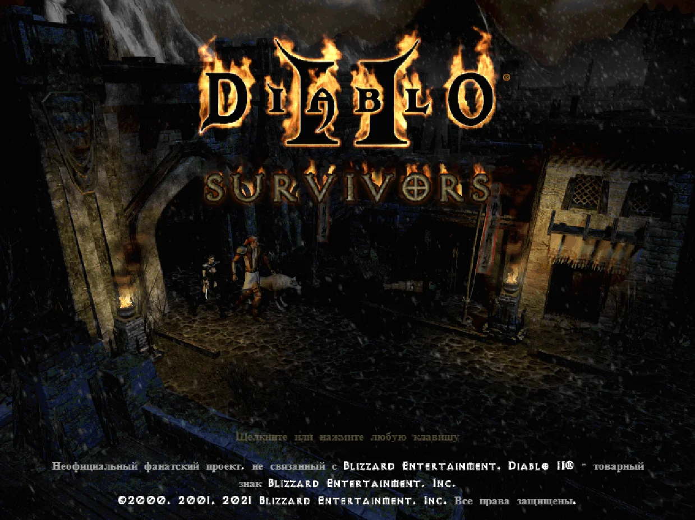
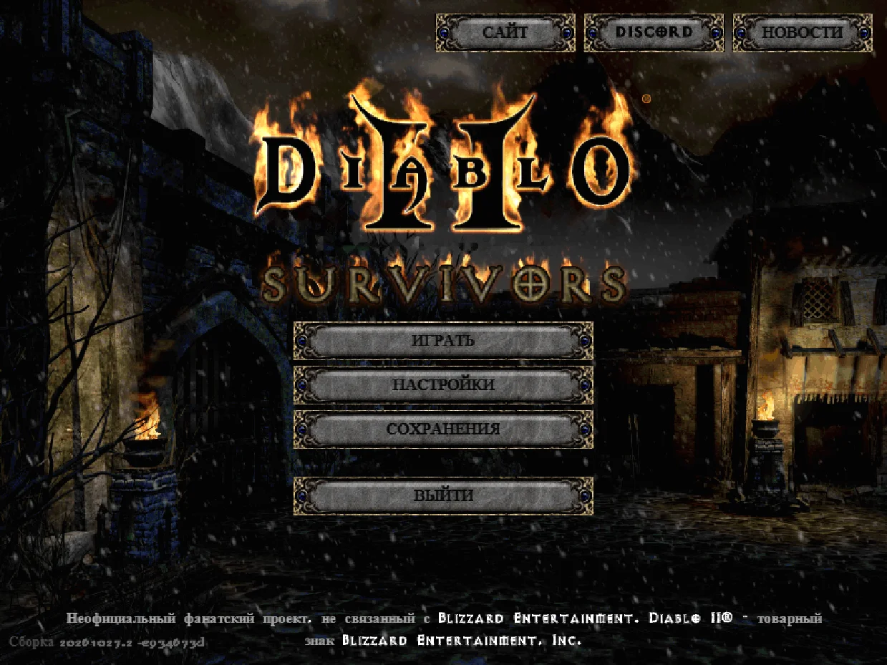
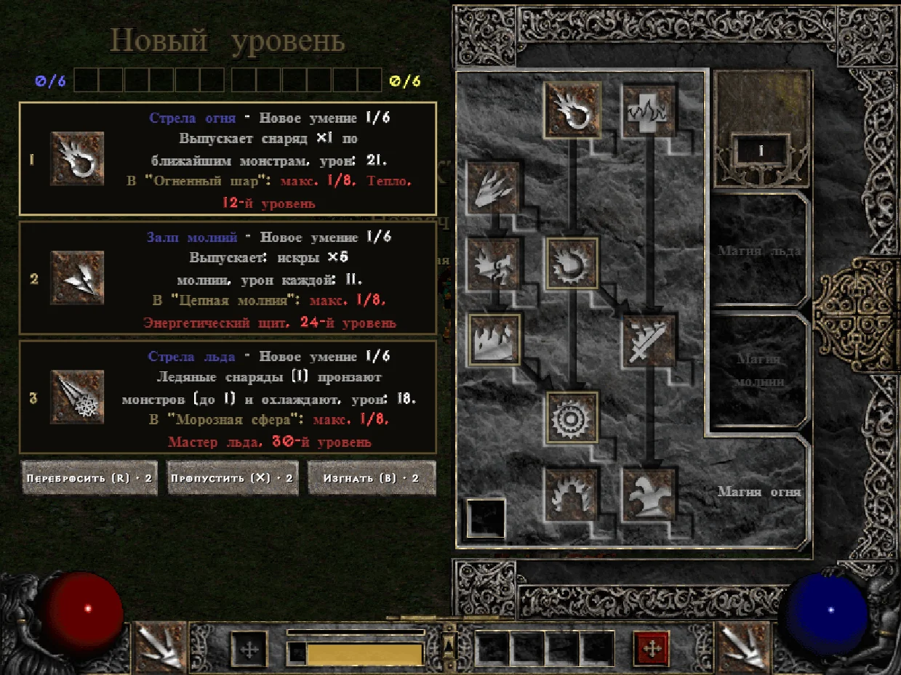
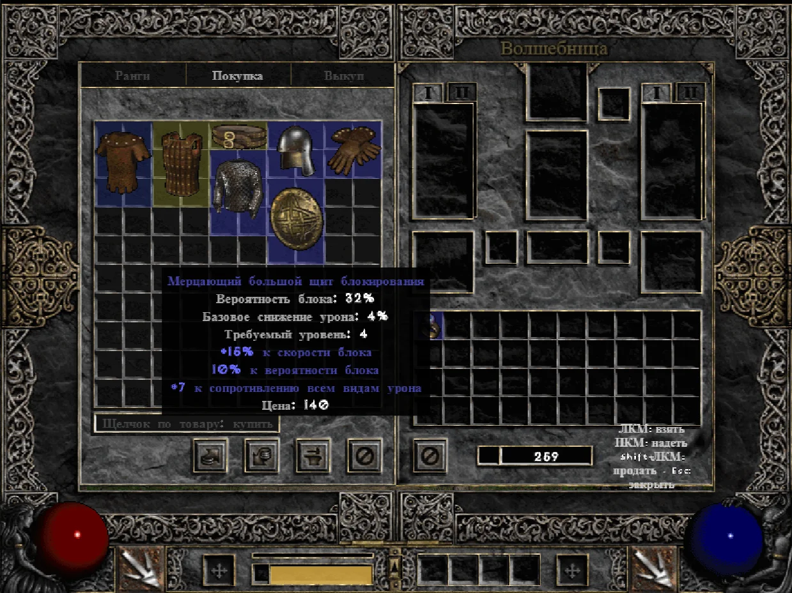
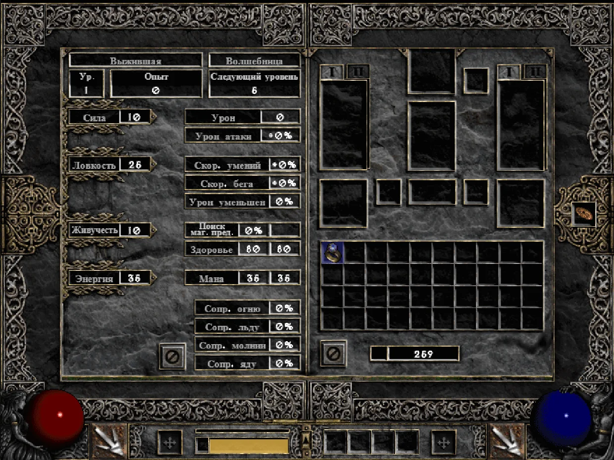
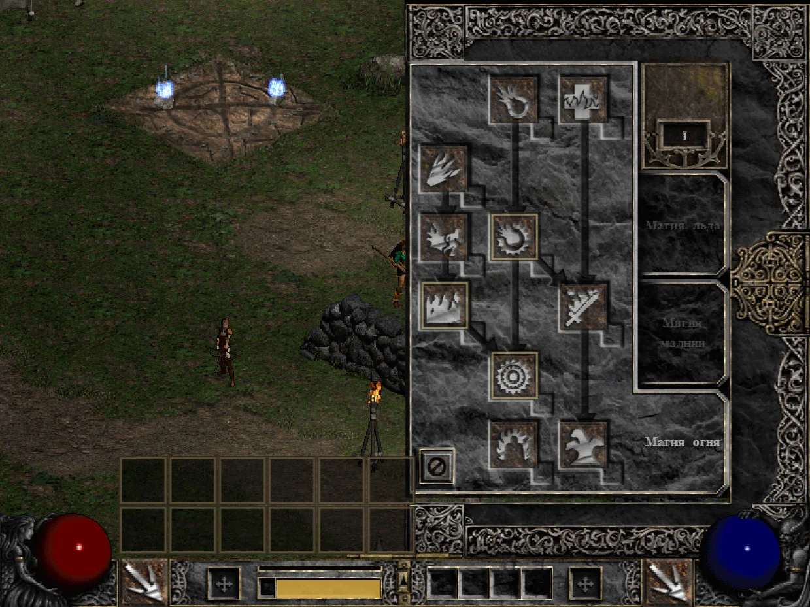
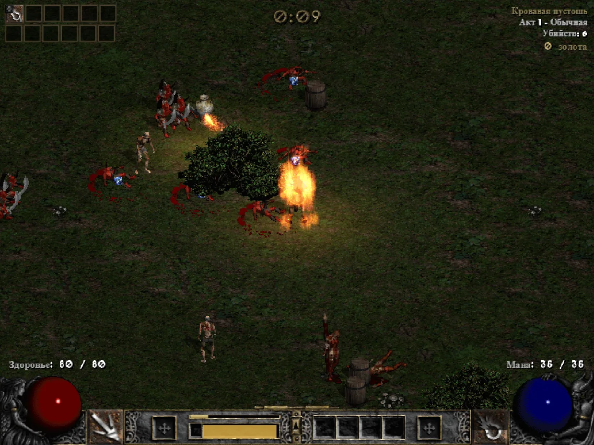
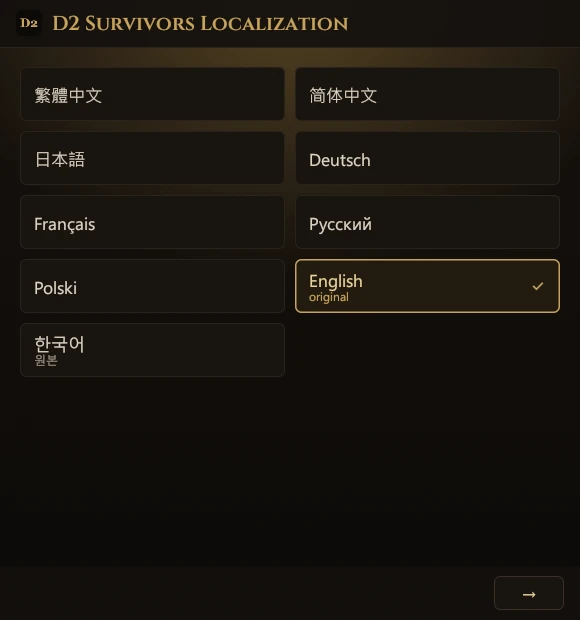
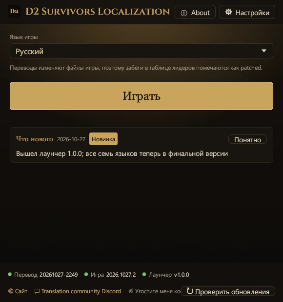
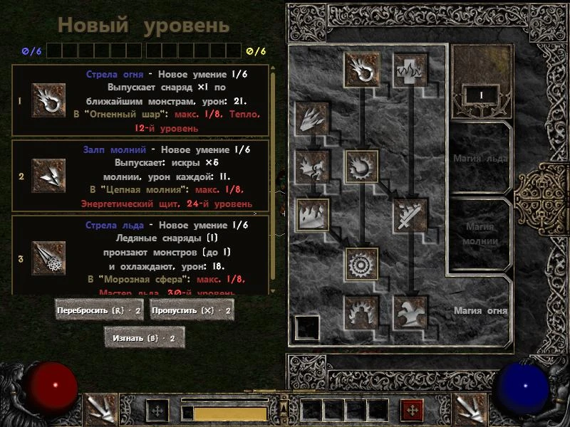
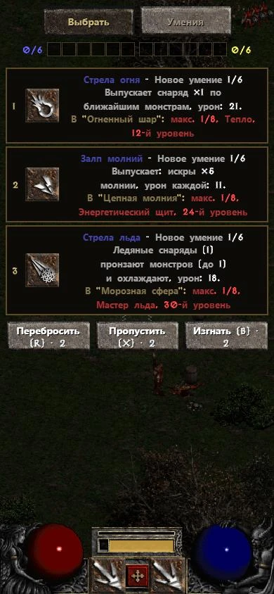
Кадры из игры: D2 Survivors (framara), на собственных файлах Diablo II игрока
Проект содержит только перевод, без файлов игры. Перед началом возьмите D2 Survivors и Diablo II из официальных источников ниже.
Автор: framara
Бесплатная неофициальная фанатская игра в жанре survivors-like (рогалик) в мире Diablo II. Проект перевода не связан с автором игры; о проблемах самой игры сообщайте через официальные каналы.
Blizzard Entertainment
D2 Survivors берёт графику и звук из Diablo II на вашем компьютере, поэтому нужна своя копия Diablo II: Resurrected или Diablo II + Lord of Destruction (патч 1.14).
Термины: названия умений, предметов, монстров и локаций взяты из официального перевода Diablo II: Resurrected; остальное переведено в этом проекте.
Готовы и вышли в финальной версии: китайский (традиционный), китайский (упрощённый), японский, немецкий, французский, русский и польский.
Обновления перевода, языков и лаунчера. Лаунчер и закладка каждый раз получают свежий перевод — заново скачивать ничего не нужно.
Файлы игры вручную править не нужно — всё делает лаунчер. Сначала закройте игру. Лаунчер работает на том языке, который вы выберете.
Скачайте версию для ПК с официального сайта D2 Survivors, укажите в настройках папку с Diablo II и убедитесь, что игра запускается.
Скачайте d2s-launcher.exe и положите в любую папку. Установка не нужна.
При первом запуске появится экран со всеми языками, каждый написан на нём самом. Нажмите свой язык, затем «→» — и лаунчер, и перевод игры будут на этом языке.
① «Игра»: лаунчер находит D2 Survivors (по умолчанию в %LOCALAPPDATA%\Programs\D2 Survivors; если игра в другом месте — «Выбрать папку…»). ② «Diablo II»: ищет вашу Diablo II: Resurrected или классическую Diablo II; если не нашёл, можно нажать «Пропустить». ③ «Готово»: при желании нажмите «Создать ярлык на рабочем столе», затем «Играть». При первом запуске скачается перевод, а оригинальный app.asar сохранится в резервную копию.
По умолчанию при каждом запуске скачивается свежий перевод («Обновлять переводы при запуске» в «Настройках»), а после обновлений игры он применяется заново автоматически. Сменить язык можно в главном окне, в списке «Язык игры».
app.asar вернётся на место.%LOCALAPPDATA%\D2SurvivorsLauncher.Чтобы сделать свой ярлык, укажите эту строку как его объект — игра запустится на выбранном языке без окна лаунчера. (Ярлык из «Создать ярлык на рабочем столе» открывает окно и сразу запускает игру.)
d2s-launcher.exe --launch --lang ru--launch--play--lang <id>--no-update--update--restore--self-update--statusИграете в браузере на d2survivors.lol? Одна закладка переключает игру на китайский (традиционный), китайский (упрощённый), японский, немецкий, французский, русский или польский — тот же перевод, что и в лаунчере. Ничего устанавливать не нужно, работает на ПК и телефоне.
D2 Русский ← перетащите на панель закладок
javascript:import('https://cycleapple.github.io/d2survivors-localization/web/d2zh.js').then(m=>m.default()).catch(e=>alert('D2 Survivors Localization: '+e))Нет. Это неофициальный фанатский перевод, не связанный с разработчиками D2 Survivors и Blizzard Entertainment.
Код — да. Исходники лаунчера, закладки, этого сайта и инструментов лежат на GitHub под лицензией MIT. Лаунчер автоматически собирается из этого открытого кода в GitHub Actions (история сборок), а к каждому релизу приложен d2s-launcher.exe.sha256, чтобы вы могли проверить файл сами.
Данные перевода (словари) пока не под открытой лицензией: все права защищены, см. dict/LICENSE. Официальные термины в них принадлежат Blizzard Entertainment.
Перевод готов: всё переведено и проверено в игре на пропуски. Затем весь интерфейс и 300 случайных строк ещё раз независимо вычитали и по итогам внесли около 640 исправлений по всему словарю. Названия магических предметов и уникальных монстров собираются с учётом русского порядка слов и рода, например «Прочный наголовник разума», а у героинь — женские титулы. Около 66 % терминов взято прямо из официального перевода Diablo II: Resurrected. Кириллица выводится шрифтами D2R: Exocet для заголовков и Philosopher для текста.
Заметили ошибку — сообщите нам.
Да. Лаунчер пока есть только для Windows; на Mac, Linux и телефоне играйте в браузерную версию и используйте закладку со вкладки «В браузере».
Нет. Лаунчер заменяет только resources\app.asar в папке игры, предварительно сохранив оригинал. Сохранения лежат в другом месте и не читаются и не меняются.
Нет. Сохранения, как обычно, хранятся в браузере. Закладка лишь подменяет текст игры на открытой странице и ничего не оставляет после себя; после перезагрузки вернётся оригинал.
Обновление заменяет app.asar, и перевод пропадает, пока вы снова не запустите игру через лаунчер или ярлык — он применит его заново.
Если новая версия изменилась слишком сильно, лаунчер ничего не ломает: он запускает оригинальную игру и сообщает, что перевод исправляется. Когда его исправят, при следующем запуске он применится сам — делать ничего не нужно.
Закладка каждый раз проверяет, подходят ли её правила к новой версии. Если нет — сообщает, что перевод нужно обновить, и не запускается; оригинальная игра не затрагивается. Пока играйте на английском.
Перевод занимает встроенный в игру слот корейского языка, поэтому в меню на его месте отображается выбранный язык. Чтобы играть на корейском, выберите в лаунчере «한국어 (원본)».
Android Chrome не запускает закладки из списка закладок: наберите название «D2 Русский» в адресной строке и нажмите на закладку в подсказках. На iPhone откройте закладки Safari, находясь на странице игры, и нажмите её там.
Проверьте также, что адрес закладки целиком заменён кодом, который начинается с javascript:.
Весь текст игры переведён и проверен в игре на пропуски. Если вы видите английский, скорее всего, обновление игры добавило новый текст; перевод дополнят в одном из следующих обновлений, и лаунчер скачает его сам. Если текст так и остаётся английским, сообщите нам.
Весь текст игры переведён и проверен в игре на пропуски. Если вы видите английский, скорее всего, обновление игры добавило новый текст; перевод дополнят в одном из следующих обновлений, а закладка всегда загружает свежий перевод. Если текст так и остаётся английским, сообщите нам.
У лаунчера нет цифровой подписи (сертификат стоит денег каждый год), поэтому Windows SmartScreen предупреждает, пока его не скачает достаточно людей.
Подписи нет, но исходный код и процесс сборки лаунчера открыты.
Нажмите «Подробнее», затем «Выполнить в любом случае» — больше Windows спрашивать не будет. Скачивайте лаунчер только с этого сайта или с GitHub Releases. В каждом релизе есть d2s-launcher.exe.sha256; сверить можно командой certutil -hashfile d2s-launcher.exe SHA256.
Если браузер пишет, что файл редко скачивают, выберите в меню загрузки «Сохранить».
Нет. Сама игра разрешает в именах персонажей только английские буквы и корейский.
Опечатки, непереведённый текст и проблемы с закладкой или лаунчером — в Discord сообщества переводчиков, там же публикуются новости.
Об ошибках перевода и программы можно также сообщить в GitHub Issues.
Проблемы самой игры (не связанные с переводом) — в официальный Discord D2 Survivors (на английском).
Будем рады! Все языки вышли в финальной версии, но перевод всегда можно улучшить. Если заметили неуклюжую фразу или опечатку, особенно в родном языке, сообщите нам. Пишите нам здесь.